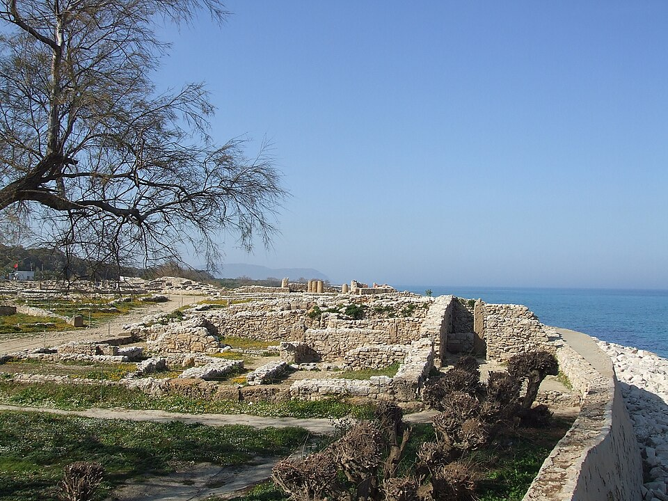

Découverte de la médina
Référence : A01
Ville : Nabeul | Catégorie : Culture
Durée : 2 heures | Tarif : 20 TND / personne
RéserverExplorez nos expériences culturelles, artisanales, naturelles et gastronomiques à travers la péninsule. Filtrez les offres selon vos envies et comparez leurs tarifs avant de simuler votre réservation.
8 activités disponibles
Référence : A01
Ville : Nabeul | Catégorie : Culture
Durée : 2 heures | Tarif : 20 TND / personne
Réserver
Référence : A02
Ville : Nabeul | Catégorie : Artisanat
Durée : 1 heures 30 | Tarif : 35 TND / personne
Réserver
Référence : A03
Ville : Kerkouane | Catégorie : Culture
Durée : 2 heures 30 | Tarif : 30 TND / personne

Référence : A04
Ville : Djebel Abderrahmane | Catégorie : Nature
Durée : 3 heures | Tarif : 25 TND / personne

Référence : A05
Ville : Kélibia | Catégorie : Nature
Durée : 3 heures | Tarif : 40 TND / personne

Référence : A06
Ville : Nabeul | Catégorie : Artisanat
Durée : 2 heures | Tarif : 25 TND / personne
Réserver